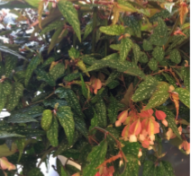

Aeonium Spp
Bear's Paw
Crassula "Spring Time"
Crassula "Tom Thumb"
Crown of Thorns
Echeveria Allegra
Euphorbia Xylophylloides
Haworthia Cooperi
Haworthia Spp
Hen and Chick/Houseleek (Cobweb)
Hen and Chick/Houseleek
Little Jewel
Marginata Lavender Scallops
Neon Breaker
Panda Plant
String of Pearls
Tiger"s Jaw
Zebra Plant
Begonia "Angel Wing"

Begonia "Beefsteak"
Begonia Incisoserrata
Begonia Rex
Begonia Rex Escargot
Chinese Money Plant
False African Violet
Geranium
Nephytis Goose Plant
Night Blooming Jasmine
Orange Jessamine
Peperomia Caperata "Rosso"
Peperomia polybotrya
Peperomia "Watermelon"

Peperomia (other varieties)
Plecthranthus Venteri
Sanservia Trifaciata
Scented Geranium
Shamrock
Snake Plant
Spider Plant
Wandering Jew